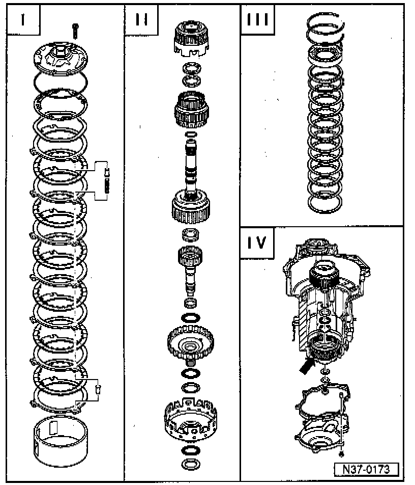

Overview of Planetary Gearbox Repairs

I - Removing and installing: ATF pump to supporting tube
II - Removing and installing: Reverse gear clutch -K2- to large sun gear
III - Removing and installing: Free wheel and reverse gear brake -B1-
NOTE: To remove and install free wheel first remove valve body together with plugs
IV - Removing and installing planet carrier
NOTE: It is not necessary to remove input gear (arrow).